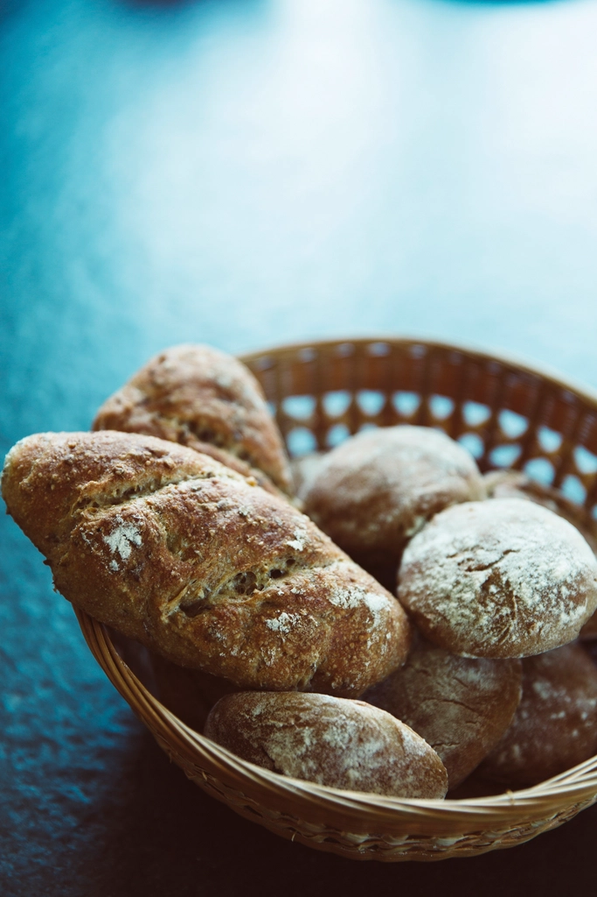

熊本県大津町のパン屋 TOIRO BAKERY（トイロ ベーカリー）
「トイロ」という名前には、十色(といろ)という読みを重ねています。好きなパンも、食べたい気分も、今日の忙しさも、人それぞれ。だから私たちは、一人ひとりの「今日の一個」に出会ってもらえるように、色とりどりのパンを焼いて棚に並べています。食パンも、惣菜パンも、甘いパンも。その日によって並ぶ顔ぶれが少しずつ違うのも、TOIRO BAKERYらしさだと思っています。今日はどんな色のパンに出会えるか、ぜひ店頭で確かめてみてください。
その日ごとに表情を変える、TOIRO BAKERYの代表的な4つの顔ぶれです。